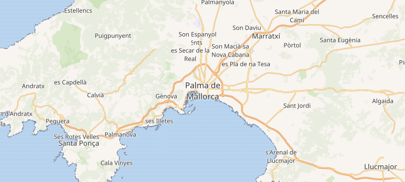
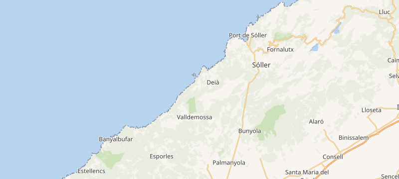
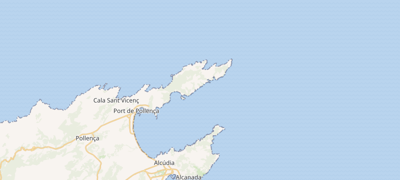
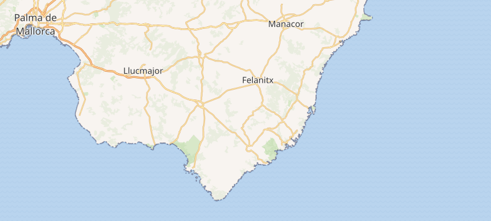
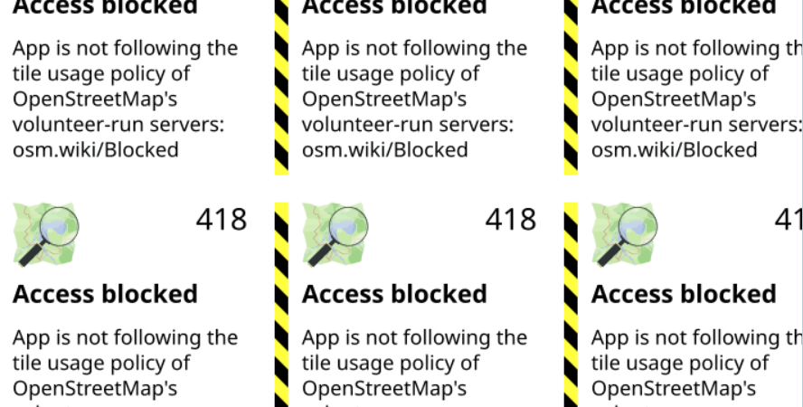
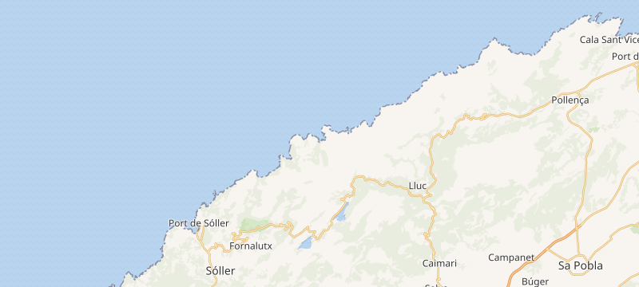
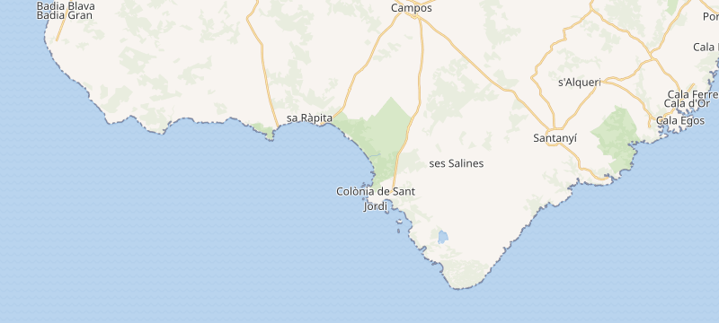

🗺️ Ogólny zarys tygodnia
Październik to idealny moment: ~20–24°C, mniej tłumów, wszystko nadal otwarte (choć bywa deszczowo — październik i listopad to najwilgotniejsze miesiące). Santa Ponsa to świetna baza — 25 min do Palmy, blisko do zachodniego wybrzeża i wejścia w góry Serra de Tramuntana (UNESCO). Na północ i wschód wyspy licz 1–1,5 h jazdy. Wszystkie Twoje pinezki z listy Google (28 miejsc) są wplecione w plan — nowe pozycje oznaczam 🆕.
| Data | Region | Najważniejsze punkty |
|---|---|---|
| 6.10 (wt) | Przylot | Odbiór auta, przejazd do Santa Ponsa, zameldowanie |
| 7.10 (śr) | Palma de Mallorca | La Seu, Almudaina, fontanna żółwi, Bellver |
| 8.10 (czw) | Serra de Tramuntana I | 🥾 Szlak Arcyksięcia, Valldemossa, Deià, Fornalutx, Sóller |
| 9.10 (pt) | Północ | Alcúdia, Mirador Es Colomer, Cap de Formentor |
| 10.10 (sob) | Południowy wschód | Targ Santanyí, Caló del Moro, Parc de Mondragó |
| 11.10 (nd) | Wschodnie wybrzeże | Cuevas del Drach, Coves d'Artà, Capdepera |
| 12.10 (pn) | Serra de Tramuntana II | Sa Calobra, Torrent de Pareis, Lluc, Campanet |
| 13.10 (wt) | Wylot | Es Trenc rano, oddanie auta, lot 21:20 |
📍 Twoje pinezki (28) — gdzie trafiły
| Pinezka z listy | Dzień | Status |
|---|---|---|
| La Seu (katedra) | 1 | ✓ w planie |
| Fountain (Font de les Tortugues) | 1 | 🆕 |
| Palma Aquàrium | 1 (lub 7) | 🆕 |
| Valldemossa | 2 | ✓ w planie |
| Deià | 2 | ✓ w planie |
| Sóller | 2 | ✓ w planie |
| Port de Sóller | 2 | ✓ w planie |
| Fornalutx | 2 | 🆕 |
| Ogród Botaniczny (Sóller) | 2 | 🆕 |
| Barranc de Biniaraix | 2 | 🆕 |
| Sa Foradada | 2 | 🆕 |
| Banyalbufar | 2 | 🆕 |
| Estellencs | 2 | ✓ w planie |
| Formentor | 3 | ✓ w planie |
| Mirador de Es Colomer | 3 | ✓ w planie |
| Caló del Moro | 4 | ✓ w planie |
| Parc natural de Mondragó | 4 | 🆕 |
| Cala Mondragó | 4 | 🆕 |
| Coves del Drach | 5 | ✓ w planie |
| Coves d'Artà | 5 | ✓ w planie |
| Safari Mallorca | 5 | 🆕 |
| Ses Païsses | 5 | 🆕 |
| Capdepera | 5 | 🆕 |
| Sa Calobra | 6 | ✓ w planie |
| torrent de Pareis | 6 | ✓ w planie |
| Lluc i Son Macip (klasztor Lluc) | 6 | 🆕 |
| Pico de Masanella | 6 | 🆕 |
| Es Trenc | 7 | ✓ w planie |
1
Palma de Mallorca — stolica i katedra
Środa 7.10 · dojazd z Santa Ponsa ~25 min

Katedra La Seu w Palma de Mallorca — fot. Wikimedia Commons (CC).
🚗 25 min z Santa Ponsa
🅿️ garaż w centrum (nie wjeżdżaj w starówkę)
👟 spacer całodniowy
Do zobaczenia
- Katedra La Seu — gotycka katedra z XIII w., rozeta o średnicy 12 m i ołtarz w formie korony cierniowej wg projektu Gaudiego. Bilety z wyprzedzeniem: catedraldemallorca.org.
- Pałac Królewski La Almudaina — dawny pałac mauretański, dziś reprezentacyjna rezydencja królewska, tuż obok katedry. Bilety: patrimonionacional.es.
- Font de les Tortugues (fontanna żółwi) 🆕 — fontanna z Twojej listy, w ogrodach S'Hort del Rei tuż przy katedrze i Almudainie.
- Parc de la Mar — jeziorko i trawniki pod katedrą, klasyczne miejsce na zdjęcie.
- Zamek Bellver — unikalny okrągły gotycki zamek (1300–1311) na wzgórzu, z widokiem na miasto i zatokę. Parking mały — lepiej pieszo (430 schodów) lub autobusem. Bilety: castelldebellver.palma.es.
- Stara dzielnica — wąskie uliczki, kościoły, place; spokojny spacer i kawa.

📍 Palma de Mallorca — otwórz w Google Maps · mapa © OpenStreetMap
Opcjonalnie: Palma Aquàrium 🆕 — duże akwarium przy Playa de Palma; wygodne dziś albo w dniu wylotu (13.10, bo leży blisko lotniska).
Wieczór: kolacja na tapas w dzielnicy Santa Catalina albo spacer po Passeig del Born.
Parking: wjedź od razu do garażu przy Passeig Marítim i zwiedzaj pieszo — starówka to labirynt wąskich jednokierunkowych uliczek.
2
Szlak Arcyksięcia + Valldemossa, Deià, Sóller
Czwartek 8.10 · ~45 min do Valldemossy · dzień kluczowy

Szlak Arcyksięcia — urwiska Cingles de Son Rul·lan (Wikimedia Commons, CC).

Valldemossa (Wikimedia Commons, CC).
🥾 MUST-DO: Szlak Arcyksięcia
⛰️ ~10 km / 3–4 h
🍊 Sóller po południu
RANO — Szlak Arcyksięcia (Camí de s'Arxiduc): wąska, wykuta w zboczu ścieżka zbudowana pod koniec XIX w. dla arcyksięcia Ludwika Salwatora Austrii (Arxiduc Lluís Salvador) — pioniera turystyki na wyspie, który wykupywał dzikie tereny, by je chronić, i opisał Baleary w 7-tomowym dziele „Die Balearen”.
Przebieg szlaku
- Start: parking/okolice Valldemossy (szlak „Camí des Pouet” lub wejście z drogi Ma-10); oznakowanie GR 221 i czerwone znaki.
- Trasa: pętla z Valldemossy ~9–12 km, ~3–4 h, podejścia ~400–500 m; szlak biegnie grzbietem i urwiskami nad morzem (ok. 900–1100 m n.p.m.).
- Punkty kluczowe: Mirador de s'Arxiduc (kamienny taras widokowy z balustradą), Es Caragolí (szczyt z widokiem 360°), Pla de ses Aritges, urwiska Cingles de Son Rul·lan.
- Co wziąć: buty trekkingowe, woda, wiatrówka (szlak odsłonięty), prowiant.
Popołudnie — po szlaku
- Valldemossa — klasztor kartuzów i Muzeum Chopina (Chopin z George Sand zimą 1838/39).
- Deià — artystyczna wioska; tu pochowany jest pisarz Robert Graves.
- Sa Foradada 🆕 — punkt widokowy na skalną formację z „oknem” w morzu, przy drodze Deià–Valldemossa.
- Sóller — plac z zabytkowym tramwajem, kościół Sant Bartomeu, świeży sok pomarańczowy.
- Fornalutx 🆕 — uznawane za jedno z najpiękniejszych miasteczek Hiszpanii (kamienne domy, brukowane uliczki).
- Jardí Botànic de Sóller (ogród botaniczny) 🆕 — kolekcja roślin Balearów, tuż za Sóller.
- Port de Sóller — przejazd zabytkowym tramwajem (~30 min), piaszczysta plaża, kolacja rybna.

📍 Okolice Valldemossa–Deià–Sóller — otwórz szlak w Google Maps · mapa © OpenStreetMap
Wariant szlaku: zamiast Szlaku Arcyksięcia możesz przejść Barranc de Biniaraix 🆕 — kamienisty wąwóz startujący z Sóller (widokowa, bardziej „dzika” trasa).
Powrót: wracaj nadmorską MA-10 przez Banyalbufar 🆕 (tarasowe winnice nad morzem) i Estellencs — punkty widokowe na klify.
Jedzenie w porcie: Kingfisher bywa pełny — obok polecana Só Caprichos (taras, widok na port). Mapa →
Gdyby padało: szlak przełóż na 12.10, a dziś zrób spokojniej: Valldemossa → Deià → Sóller + tramwaj do Port de Sóller.
3
Północ — Alcúdia, Mirador Es Colomer, Cap de Formentor
Piątek 9.10 · najdalsza trasa, ~1,5 h do Formentor

Cap de Formentor — fot. Wikimedia Commons (CC).
🚗 wyjazd wcześnie
🗼 latarnia na cyplu
✅ droga otwarta dla aut w październiku
Do zobaczenia
- Alcúdia — stare miasto w murach obronnych; obok ruiny rzymskiej Pollentii.
- Port de Pollença — nadmorska promenada (miejsce akcji opowiadania Agathy Christie „Problem at Pollensa Bay”).
- Mirador de Es Colomer — jeden z najpiękniejszych punktów widokowych wyspy; parking przy wejściu, dojście łatwe. Mapa → Dla chętnych szlak na Talaia d'Albercutx.
- Platja de Formentor — piękna plaża z widokiem na góry (parking mały, płatny).
- Cap de Formentor / latarnia — latarnia z 1863 r. na końcu klifu, 11 km krętej drogi. Mapa →

📍 Półwysep Formentor — otwórz w Google Maps · mapa © OpenStreetMap
Ważne: droga do latarni Formentor jest zamknięta dla aut tylko 1.06–30.09 (10:00–22:30) — w październiku wjeżdżasz samochodem pod samą latarnię.
Logistyka: najdłuższy dzień — wyrusz po śniadaniu i wracaj przed zmrokiem (serpentyny MA-2210 w ciemności bywają męczące).
4
Południowy wschód — Santanyí, Caló del Moro, Mondragó
Sobota 10.10 · ~45–60 min dojazdu

Santanyí — fot. Wikimedia Commons (CC).
🧺 targ w Santanyí (sob)
🏊 Caló del Moro
🌿 Parc de Mondragó
Do zobaczenia
- Targ w Santanyí (środy i soboty) — lokalne produkty, rękodzieło; kamieniczki z piaskowca marès. Lunch: Sa Botiga przy kościele Sant Andreu. Mapa →
- Caló del Moro — malownicza zatoczka z turkusową wodą (zejście po skałkach). Mapa →
- Mirador del Pontàs — naturalny skalny most w morzu. Mapa →
- Parc natural de Mondragó 🆕 — park przyrody ze ścieżkami wśród pól i zatoczek.
- Cala Mondragó (S'Amarador) 🆕 — piaszczysta plaża na terenie parku, spokojniejsza od turystycznych kurortów.

📍 Santanyí → Mondragó — otwórz w Google Maps · mapa © OpenStreetMap
Targ: jedź z samego rana — unikniesz korków i problemów z parkingiem; część stoisk przyjmuje tylko gotówkę.
5
Wschodnie wybrzeże — jaskinie, Artà, Capdepera
Niedziela 11.10 · ~1 h do Porto Cristo, potem na północ wybrzeżem

Wnętrze Cuevas del Drach — fot. Wikimedia Commons (CC).
🎶 koncert w jaskini
🦇 Coves d'Artà
🏰 zamek Capdepera
Do zobaczenia (kolejno wzdłuż wybrzeża)
- Cuevas del Drach (Porto Cristo) — najsłynniejsze jaskinie wyspy z podziemnym jeziorem Martel i koncertem na łodziach. Rezerwacja z wyprzedzeniem. Mapa →
- Safari Mallorca 🆕 — Safari Zoo koło Sa Coma (opcjonalnie, jeśli lubicie zoo; to 2–3 h).
- Coves d'Artà — jaskinie na klifie nad morzem, stalaktyty do 22 m, pokaz świetlno-dźwiękowy w komorze „Piekło”; ~45 min z przewodnikiem, 16 €. cuevasdearta.com
- Ses Païsses 🆕 — osada talajotyczna (muzeum archeologiczne na wolnym powietrzu) tuż przy Artà.
- Capdepera 🆕 — miasteczko i największy, najlepiej zachowany zamek na wyspie (Castell de Capdepera) z widokiem na okolicę.

📍 Porto Cristo → Artà → Capdepera — otwórz w Google Maps · mapa © OpenStreetMap
Dużo punktów: to najbogatszy dzień — wybierz priorytety (np. Drach + Artà + Capdepera, a Safari Zoo tylko przy nadmiarze czasu). Jaskinie Drach rezerwuj online na konkretną godzinę.
6
Serra de Tramuntana II — Sa Calobra, Lluc, Campanet
Poniedziałek 12.10 · pętla górska, ~1,5 h do Sa Calobra

Sa Calobra i wąwóz Torrent de Pareis — fot. Wikimedia Commons (CC).
🐍 „droga węża” MA-2141
⛰️ wąwóz Torrent de Pareis
🦇 jaskinia bez tłumów
Do zobaczenia
- Sa Calobra i wąwóz Torrent de Pareis — zatoka otoczona 200-metrowymi klifami, ujście słynnego wąwozu (trekking ~3 km, kamienisty — „iść do końca”). Dojazd „drogą węża” MA-2141: 12 km i 26 zakrętów, w tym pętla 270°. Mapa →
- Jeziora Cúber i Gorg Blau — sztuczne jeziora na ~700 m n.p.m. wśród szczytów.
- Santuari de Lluc 🆕 — klasztor Lluc (z listy „Lluc i Son Macip”), duchowe centrum Majorki, w górach Escorca.
- Coves de Campanet — mało uczęszczana jaskinia, ~40 min, 17 €. covesdecampanet.com

📍 Sa Calobra i Lluc — otwórz w Google Maps · mapa © OpenStreetMap
Wariant dla wprawionych: Puig de Massanella 🆕 (1364 m, drugi co do wysokości dostępny szczyt; szlak ~12 km) — zamiast jaskini Campanet, jeśli wolicie całodniową górską wycieczkę.
Jedzenie w Sa Calobra: omijaj bary samoobsługowe (słaba jakość) — zabierz prowiant albo zjedz w Sóller/Caimari.
7
Wylot — Es Trenc rano i powrót do domu
Wtorek 13.10 · lot 21:20 z Palma (PMI)

Plaża Es Trenc — fot. Wikimedia Commons (CC).
🏖️ Es Trenc rano
⛽ zwrot z pełnym bakiem
🕐 na lotnisku ~2 h przed odlotem
- Rano: wykwaterowanie (depozyt bagażu w recepcji) i przejazd na Es Trenc (~45 min) — dzika plaża bez kurortów, pożegnalna kąpiel. Parking ~8 €. Mapa →
- Alternatywa bliżej bazy: Port d'Andratx + Sant Elm + rejs na Sa Dragonera, potem plaża Santa Ponsa.
- Alternatywa rodzinna: Palma Aquàrium (blisko lotniska), jeśli nie było go 7.10.
- ~18:30–19:00 — oddanie auta na lotnisku (pełny bak, zdjęcia przy zwrocie).
- ~19:30 — odprawa i kontrola; bądź na miejscu ok. 2 h przed odlotem.

📍 Es Trenc — otwórz w Google Maps · mapa © OpenStreetMap
Wynajem: zwróć uwagę na wysokość kaucji (niektóre wypożyczalnie na lotnisku, np. Goldcar, blokują dużą kwotę) i zrób zdjęcia auta przy odbiorze.
💰 Bilety i parkingi — orientacyjnie
| Atrakcja | Cena (os.) | Uwagi |
|---|---|---|
| Katedra La Seu | ~10 € | bilet online z wyprzedzeniem |
| Palau de l'Almudaina | ~10 € | bilet online |
| Zamek Bellver | ~5 € | sprawdź godziny otwarcia |
| Palma Aquàrium | ~28 € | bilet online, rodziny taniej |
| Pociąg/tramwaj Sóller (opcjonalnie) | ~35 € | trendesoller.com |
| Szlak Arcyksięcia / Barranc de Biniaraix | bezpłatny | parking przy starcie |
| Cuevas del Drach | ~17–18 € | rezerwacja na godzinę |
| Coves d'Artà | 16 € | z przewodnikiem |
| Ses Païsses | ~6 € | muzeum archeologiczne |
| Castell de Capdepera | ~3–4 € | zamek |
| Safari Mallorca | ~23 € | opcjonalnie |
| Coves de Campanet | 17 € | ~40 min |
| Parking Es Trenc | ~8 € | dzień |
| Parking Platja de Formentor | płatny | mała pojemność |
🧭 Praktyczne wskazówki
- Drogi: na Majorce nie ma już płatnych autostrad — tunel do Sóller jest darmowy. Widokowe serpentyny (MA-10, MA-2141, MA-2210) są wąskie — jedź spokojnie i ustępuj rowerzystom, których jest tu mnóstwo.
- Nawigacja: pobierz mapy offline (Google Maps lub Maps.me) — w górach bywają zaniki zasięgu.
- Pogoda: październik ~20–24°C, ale to najwilgotniejsze miesiące — weź lekką kurtkę przeciwdeszczową i buty trekkingowe (Szlak Arcyksięcia / Biniaraix / Torrent de Pareis).
- Gotówka: karty działają wszędzie, ale drobne przydadzą się na targach i parkingach.
- Godziny: w październiku część atrakcji skraca godziny otwarcia — sprawdzaj oficjalne strony (linki wyżej).
✅ Checklista przed wyjazdem
- Zarezerwuj: Katedra La Seu, Almudaina, Cuevas del Drach i ewentualnie Palma Aquàrium.
- Sprawdź kaucję i polisę ubezpieczenia w wypożyczalni aut.
- Pobierz mapy offline + zapisz linki do miejsc (są w tym dokumencie).
- Spakuj: buty trekkingowe (szlaki!), kurtkę przeciwdeszczową, strój kąpielowy, adapter (gniazdka typ F — polskie pasują).